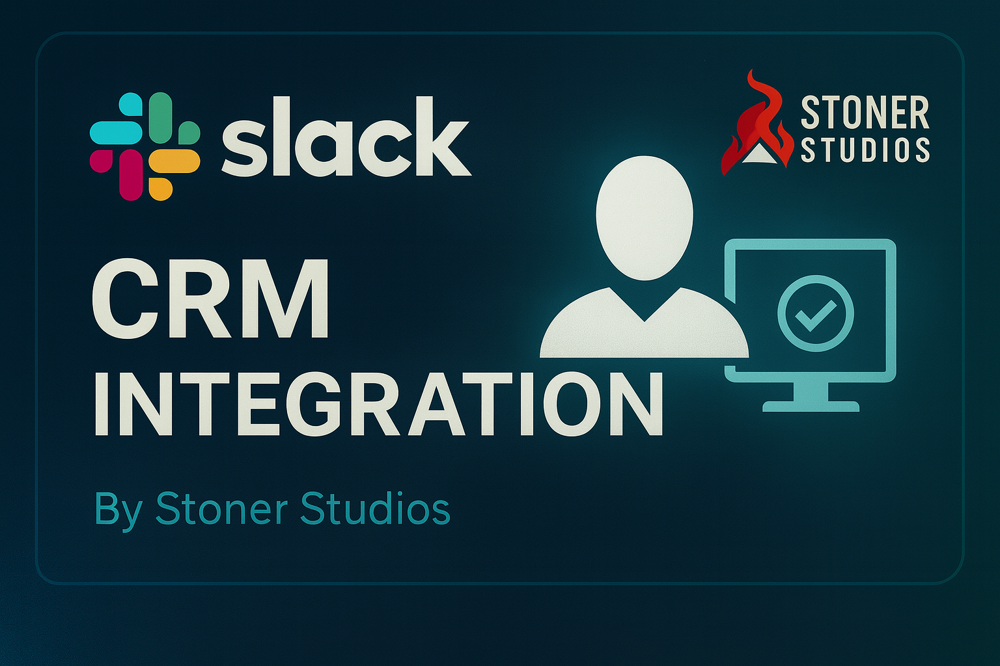
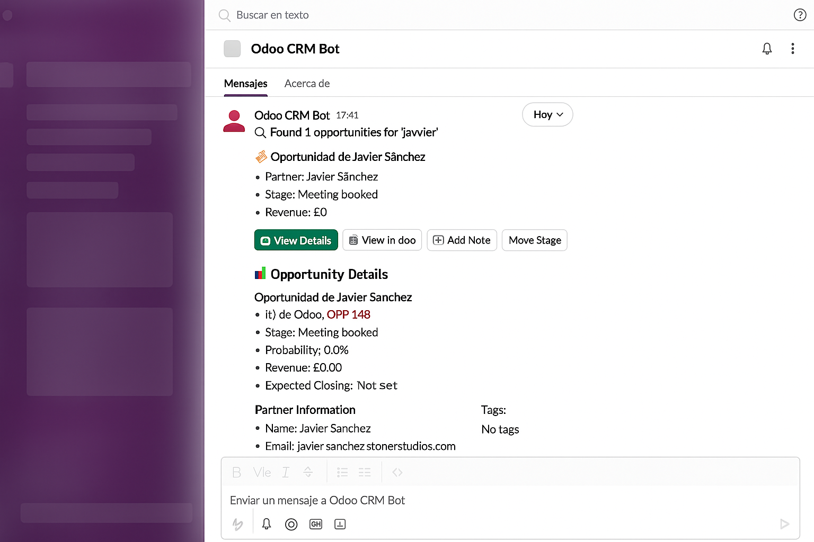

Manage your CRM opportunities directly from Slack

This module allows your team to interact with Odoo CRM directly from Slack using natural Direct Message commands. Each user securely connects their own Odoo account via OAuth 2.0, ensuring all operations respect individual user permissions.
Send these commands directly to the bot via Direct Message:
connect
Link your Odoo account via secure OAuth authentication.
status
Check your connection status with Odoo and see account details.
help
Display a list of all available commands with brief descriptions.
search <keyword> (also: buscar, b, s)
Find CRM opportunities by name or keyword.
Example: search Microsoft or s Microsoft
view <OPP_ID>
Get detailed information about a specific opportunity.
Example: view OPP_42
note <OPP_ID> <message>
Add a note to an opportunity.
Example: note OPP_42 Client called today to discuss pricing
move <OPP_ID> <stage>
Move an opportunity to a different pipeline stage.
Example: move OPP_42 Won

Example of bot interaction in Slack Direct Messages
Built with enterprise-grade security from the ground up:
💡 Note: Complete step-by-step instructions are available in the Settings panel after installation.
This module is developed and maintained by Stoner Studios.
📧 For support, contact us at support@stonerstudios.com
Stoner Studios — Premium Odoo Solutions
Licensed under LGPL-3